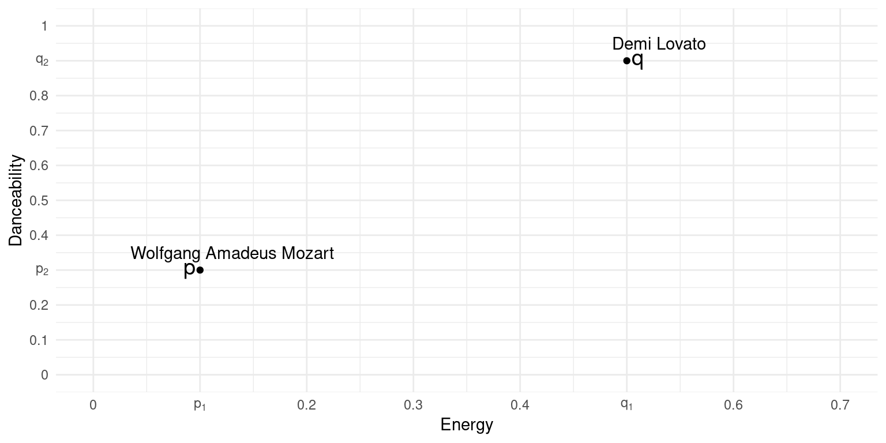

Business Intelligence & Data Science
Vorlesung 8
Entscheidungsbäume
Schritte und Intuition
- Der Information Gain beträgt für den Split bei 0.5:
\[ IG = G_{\text{init}} - G_{\text{split}} = \\0.665 - \left( \frac{1477}{3780 } \cdot 0.258 + \frac{2301}{3780 } \cdot 0.503 \right) = \\0.258 \]
- Für alle Variablen und Splits wird nun der Split mit dem höchsten Informationsgewinn ermittelt

Entscheidungsbäume
Darstellung der Entscheidungsregeln
- Root-Node
- Der Split umfasst die Anteile der Klassen in der Root-Node
- Der Datensat umfasst 30% EDM Songs, 36% Hip-Hop Songs und 33% Klassik Songs
- Da die Mehrheit der Songs aus dem Genre Hip-Hop stammen, ist die Root-Node Hip-Hop grau

Entscheidungsbäume
Darstellung der Entscheidungsregeln
- Entscheidungsregel 1:
- Unter den Nodes wird die Entscheidungsregel dargestellt
- In unserem Fall wird der Datensatz anhand der Variable Energy \(\geq\) 0.37 in zwei Regionen geteilt
- Der Pfad links entspricht der Region, in der die Bedingung erfüllt ist, rechts der Region, in der die Bedingung nicht erfüllt ist
- Beide Wege führen zu einer weiteren Entscheidungsregel

Entscheidungsbäume
Darstellung der Entscheidungsregeln
- Entscheidungsregel 2 (links):
- Hier befinden sich 67% der Daten
- Diese setzen sich zusammen aus:
- 45% EDM, 53% Hip-Hop und 2% Klassik
- Die Entscheidungsregel ist nun Energy \(\geq\) 0.82
- Wenn die Bedingung erfüllt ist, wird der Song dem Genre EDM zugeordnet
- Wenn die Bedingung nicht erfüllt ist, wird der Song dem Genre Hip-Hop zugeordnet

Entscheidungsbäume
Darstellung der Entscheidungsregeln
- Entscheidungsregel 3 (rechts):
- Hier befinden sich 33% der Daten
- Diese setzen sich zusammen aus:
- 0% EDM, 2% Hip-Hop und 98% Klassik
- Die Entscheidungsregel ist nun Danceability \(\geq\) 0.67
- Wenn die Bedingung erfüllt ist, wird der Song dem Genre Hip-Hop zugeordnet
- Wenn die Bedingung nicht erfüllt ist, wird der Song dem Genre Klassik zugeordnet

Entscheidungsbäume
Darstellung der Entscheidungsregeln
- Die untersten Nodes sind die sogenannten Blätter des Entscheidungsbaums
- Jedes Blatt entspricht einer Region, in der die Klassifikation erfolgt
- Die Angabe unterhalb der Klassifikation ergibt die Wahrscheinlichkeit, dass ein Song in das jeweilige Genre fällt
- Die Wahrscheinlichkeit entspricht dabei dem Anteil der Songs in der Region, die den jeweiligen Genres zugeordnet sind
- Die Variable Danceability spielt für die Klassifikation offenbar keine Rolle